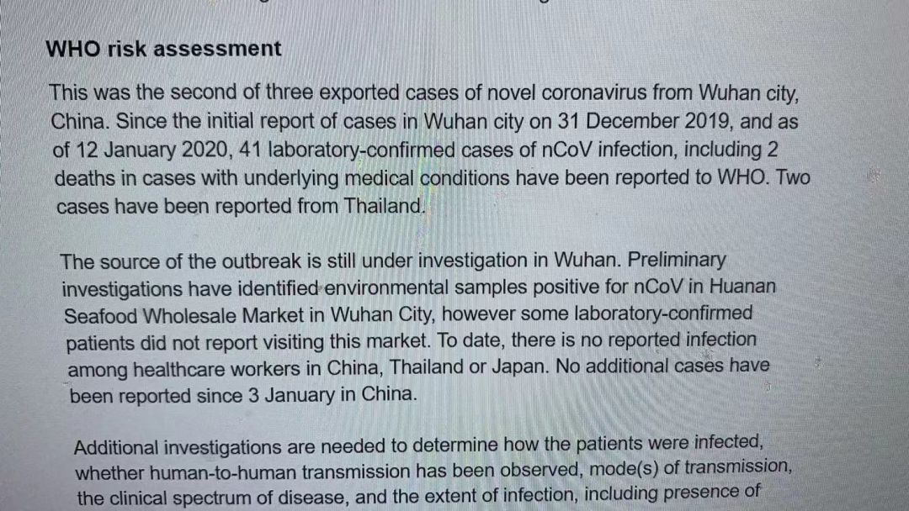
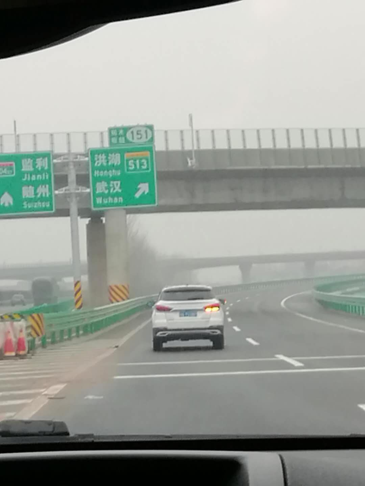
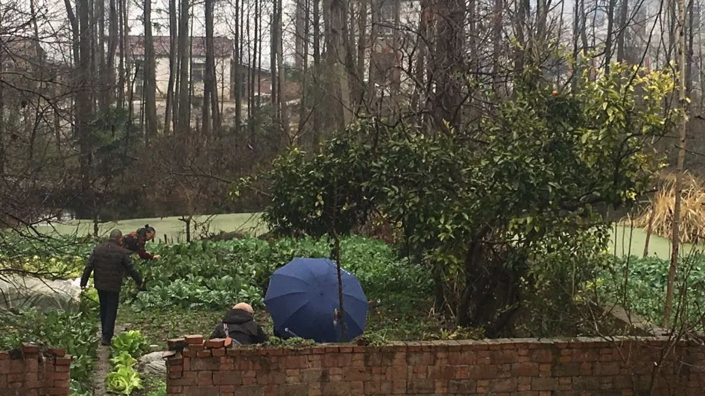

人压抑到极点，只想大哭一场——一个武汉市民的生活日记
原文链接 备份链接 前言 2003年的非典，我在武汉读书，每天两点一线地简单生活，虽然也看看新闻报道，但那时的网络并不发达，信息量很少，武汉感染的人也很少，所以真的没有什么感觉。 2020年的肺炎疫情，爆发在我生活了将近20年的武汉——这 …

_
编者按：这是海螺收到的第三篇投稿。作者一帆在对湖北省内病毒扩散毫不知情的情况下踏上返乡探亲之旅，因为当时媒体都还只是提到武汉，而她从广州回洪湖的自驾并不必经武汉，所以大家都以为没关系。即使到达洪湖之后，在当地也没有感受到形势的严峻，一家人还是照例做着过年的准备。直到除夕气氛骤然紧张，一家人千里奔袭，才终于回到自己的家。如果他们能早了解到病毒的知识，知道病毒扩散的严重，他们绝不会冒险回乡。他们是返鄂探亲以及封城之前离开的数以万计湖北人的缩影。恐慌、迷茫、焦虑、没有安全感，这是他们真实的心理写照。因此我们知道，背负指责的不该是他们，而是让他们陷入这种境地的信息不透明。
_

一个湖北人的返乡探亲日记
◇ 一帆
启程前 
2019年将近年底的时候，在湖北孝感的亲人询问我们2020春节是否回老家过年，我没有像往年那样痛快回复。
原本计划2020年春节和爸妈在广州过。
这些年从广州回老家过春节，自驾跑了差不多10年。婆家在洪湖，娘家在孝感，每个春节洪湖孝感两地跑，高铁票难抢，拖着大大小小的行李，还带着个孩子转车又不方便，所以一家三口开车回老家过年相对而言是最佳选择。辛辛苦苦1000来公里，光单程就要两天时间，一路上的寒冷、堵车，坐得腰酸背痛、吃不好睡不好——今年真不想受这个罪了，要么去国外旅游吧。
但2020年1月23日是公公去世一周年的忌日，按老家规矩需要回去拜祭。老公说：“你实在不想回，我自己回，然后再和你们娘俩一起出国游？”我想了想，觉得不妥，毕竟公公婆婆生前对我们很好，该祭祀的时候不回去，这是不孝；大过节的老公一个人回老家，两地分开将近一周也不好；孝感的老爸老妈还眼巴巴盼着我们呢。来回四天的行程固然辛苦，但想想这些……唉！算了，一咬牙，还是回吧！
定下1月21日中午启程。具体行程计划是：22日到洪湖，23日给公公婆婆上坟，24日到孝感过除夕，初五返回广州。一旦做了决定，路途的辛苦、取消出国游的不快很快被即将与亲人团聚的愉悦取代了。我和老公又开始像往年一样准备回老家的年货，过冬的衣服塞满了两个大行李箱。
1月22日
其实早在元旦前后，就不知从哪耳闻武汉有SARS了，但很快官方正式否认，后来又有处理“造谣者”的新闻，我就很快淡忘了这事。到了1月18日，看到微信里有人转发了一条信息：“武汉的SARS已经向境外扩散，香港日本泰国都发现了。美国多个机场增加/加强了对武汉旅客的安检。世卫组织每天都有病情报告。”老公的外甥正在美国读博士，他不信，特意上世界卫生组织网站看了最新消息，确信传到国外的三例都是“武汉的病毒”，日本的也是，而且“他们都没有去过那个海鲜市场”，所以“你们路过武汉的时候要小心一点”。我们的行车路线并不经过武汉，家人们在微信群讨论了一番，都认为小心点应该不要紧。

1月18日世界卫生组织网站信息
虽然在1月20日的晚间新闻中钟南山院士就表明了“新型冠状病毒存在人传人现象”，但我们看到这条新闻已经是21日。虽然有了一个全新的宣布病毒具有传染性的消息，但是我们并没有意识到这是多么严重的事，或者说绝大多数老百姓在21日的时候还不觉得这个病会怎样。我的另外两位同事全家也都是在20日、21日按计划自驾返回老家。20日下午，我们忙忙碌碌地收拾房子、清理冰箱、买食品饮料，准备路上的水果还有瓜子之类的零食，不亦乐乎。

难得回乡路上不堵车
1月21日中午出发，路途没有想象得那么堵，大约是小年返乡高峰过去了，这是多年来第一次遇到回乡道路比较通畅的情况，我们还觉得很庆幸。
晚上9点住宿。22日中午顺利达到老公姐姐家，姐夫是洪湖一家医院的外科医生，他们刚住了一年的新房子就在医院旁边的小区。
回家的喜悦很快被网上各种关于疫情的信息冲淡了，各种传闻、各种数据、各种微信视频，所有人的注意力都被一个情况吸引了：新型冠状病毒传染开始快速蔓延。恐慌情绪也一点点从心底蔓延。我们是经历过2003年非典的，那一年我在北京读博士，校园封闭整整2个月。那种熟悉的感觉被唤醒了，这一次，我竟然又身在疫区，这是什么运气？
而不巧的是老公姐姐正在生病！她因为要迎接兄弟们回老家，打扫卫生出了大汗又着了凉，咽喉嘶哑不能出声，还有点咳！咳嗽发烧是新型冠状病毒感染的症状啊。为了安全起见，姐姐跟着医生老公去了医院检查。过了很长时间还没回，大家在家里越等越着急——现在医院已经是最危险的地方了，谁知道好好的人会不会在医院被传染？好在检查结果是细菌感染，只需吃药休息就好。一颗悬着的心稍稍放了下来。
1月23日
第二天疫情就发生了重大变化，一个标志性事件就是23日上午10点开始武汉封城！这个消息让人震惊，我的心笼罩上了一层阴云，洪湖离武汉还算远，可黄冈、鄂州两地疫情开始恶化，孝感其次，这些地方都紧挨着武汉市。给很少联系的武汉的亲戚们发短信问候，这时候他们一定最需要大家的关心。他们的回复都还是非常乐观的，所有武汉亲戚都健康平安。给孝感的老爸打电话，叮嘱他们出门必须戴口罩，老爸说：“知道知道，老年人更容易被感染，你妈很关注这个疫情，每天守在电视机前看新闻呢。”
上坟是此次回老家最重要的一件大事。23日上午我们一家、二哥一家，还有姐夫（姐姐生病在家休息）共七口人两台车，自驾去给公公婆婆上坟，墓地离洪湖市区约半小时车程。天阴沉沉下着小雨，湿冷。大家都戴着口罩，心情格外阴郁。公园墓地空无一人，异常荒凉，地上长满杂草落满残叶，香炉里全是冰冷的积水。二哥用手拔了墓前的杂草，简单收拾了枯枝败叶，大家烧纸、上香，在青石板上铺上一个塑料袋垫着，磕头、跪拜。没有放鞭炮。微雨中，大家都沉默不语。
回到家，我无心看电视、聊天，手里一直握着手机，刷关于新冠肺炎的各种消息。我问在医院工作的姐夫：“洪湖有没有确诊的病例？”他说：“其实已经有疑似33例了，而报道出来的只有2例。”
大学同学朋友圈里大家都开始相互打听，谁谁在武汉，情况如何？黄冈、鄂州等七个城市已经封城，速度之快让人有点反应不过来。离武汉比较远的潜江都封了，可是挨着武汉市的孝感此时还没有动静。晚上，二姐突然发了一张截图给我，是关于孝感要封城的“内部消息”。此前朋友圈里传的“小道消息”一个个都迅速变成了事实，我判断截图为真的可能性非常高，可能孝感真的也要封了！但是，会是明天吗？大姐也告诉我，她的一个同事没办法从汉川来孝感了。或许只是汉川不能出城？
明天要不要去孝感？计划看来必须要改变了。我开始发虚，但内心还挣扎着留存一丝幻想：也许孝感没事呢？我们明天去孝感过个除夕，在爸妈那里住一晚然后初一就回广州？
我们原计划24日回孝感过年。弟弟一周前就已经把大年三十和初二的菜谱都设计好了，还专门发给我“过目”，说和弟媳已经做好了准备，弟媳的厨艺是一流的。但这次弟弟也打算露一手，专门学习并试做了一次粉蒸肉，很成功！他还发了一张冒着热气的粉蒸肉照片过来，说只等我们回去品尝他的手艺了。弟弟一家打算今年年三十把老爸老妈一起接过来在他们家吃年夜饭，这将是这么多年我们这个大家庭第一次在弟弟家过年呢。洪湖离孝感只有一百三十公里，车程不到3个小时，家里人都在盼着我们。
1月24日
24日一早。到底走不走？大家都没主意，老公的意思是不要去孝感，太危险。我老大不乐意：就在家门口了，只有100多公里了啊！但我心里很清楚，孝感被感染的人数越来越多，情况很糟，此时不去孝感才是最安全的。
弟弟8点多就微信催我：“出发没啊？”
我吞吞吐吐地回复：“孝感可能要封城，我们不敢去啊。”
弟弟急了：“哪里这么巧啊？今天封城？今天可是大年三十！”
我说：“万一封了，我们可就没法回广州了。”
弟弟有些不开心：“没那么吓人吧！你们今天过来和爸妈一起吃个饭，第二天就走，行不？”
我知道他精心准备的年夜饭，很大程度上也是为了招待我这个远方回来的三姐。唉，我能不明白他的一番心意吗？我有些动摇，还是去孝感看一眼爸妈？吃顿饭的功夫总不至于有什么吧……
弟弟有些气馁地继续让步：“不行的话，你们赶紧开车过来，一到我就马上开饭！吃完饭你们马上回洪湖！洪湖离武汉远，应该安全点。洪湖到孝感来回一趟大概6个小时，辛苦姐夫一趟！怎样？”
我真心不忍了，说：“要么……咱就赌一把？孝感今天不会封？”
这时我隐约听到弟媳劝弟弟：“别说啦……”
弟弟终于语气暗淡：“算了，别赌了！你们不回就不回吧。”
商量完，放下手机，我仿佛看到，弟弟面对着厨房一堆的年夜饭半成品，那种失望的表情。我心里空落落的——就离家130公里了，爸妈在等我们。
给老爸打电话，给他解释说我们不回去了。老爸很明事理，马上高声说：“不要回不要回，安全第一！明天你们赶紧回广州吧！”
上午11点，终于看到孝感公共交通停运的消息。接着孝感将于24日24:00封城的消息也公布了。万幸我们最终决定不去孝感看父母和弟弟，不然就会被封在孝感无法回家，也会增加亲人们的负担。现在想起来还心有余悸。
事实就是这样，我不能回娘家过年了。
既然如此，那就在洪湖过完三十，明天一早回广州吧！感觉一个可怕的隐形恶魔的脚步，已经开始一步步逼近我们，让我们不能多耽搁一秒。
老公二哥一家已经准备返回荆州，看我们一家留下，突然做出决定：留在洪湖过三十，明天一早再回荆州市！这一决定，让老公的姐姐姐夫一下子高兴了——“这个三十，热闹了哈！”看到姐夫的笑脸，大家心里忽然又升起了一股团圆过年的喜气。
姐姐吃了两天药有精神些了，嗓子可以发出声音了。她要去乡下婆婆家，一来是看望老人家（她习惯在大年三十回公婆家吃年夜饭），送年礼；二来是顺便在乡下带点新鲜的蔬菜回来囤着过年（初一到初三菜场里很少有人开业）。她问我们要不要一起去摘点农家新鲜菜？好啊，我们巴不得出去透透气呢！
到乡下，还是微雨，空气凉飕飕的。淅淅沥沥的小雨一直不停，村里看不到人，家家门口都很冷清，也没有孩子放鞭炮。不知道是不是因为家家都在避免病毒传染的原因，虽然是年三十，村庄也不见一点热闹的气氛。开车走访了姐姐婆家几个亲人，寒暄几句，送了点年礼，大家很快就离开了。午饭在姐夫弟弟家（姐姐的公婆和他们住一起）吃的，吃饭前大家冒着细雨在菜地里亲手摘了一些胡萝卜、包菜等，算是开心了一刻。

乡下菜园冒雨采摘新鲜蔬菜
开饭了，桌上摞的满满的碗碟，有湖北乡下特有的蒸菜、腊鱼、鱼糕、八宝饭等过年才吃的几道大菜。这提醒我们，今天是大年三十。大家坐拢来，没有大声的喧哗，没有酒水，大家客客气气。姐夫的弟媳笑呵呵的，一再招呼大家多吃多吃，但气氛始终热闹不起来，大家都吃得默不作声。
吃完饭，临走前还带了乡下自留的甘蔗、橘子等。
一回到洪湖，二哥马上钻进厨房，开始忙活八口人的年夜饭，其他人该看电视看电视，该玩游戏玩游戏。
好多年不联系的住宜昌的一个大学同学私聊我，说：“宜昌都已经封城！你们啥时候回去？能走赶紧走吧！”什么，现在？三十晚上走？！在外面大冷天的过三十？
我望望外面开始黑下来的天空，打了个哆嗦。
我说：“等过了三十吧，明天我们就走。”
她没再回复我。但是，她的提醒让我莫名紧张，“能走赶紧走”这句话一直在脑子里挥之不去。
晚上大家聚在一起看春晚。不知为什么，热闹豪华的春晚看起来很是刺眼，有些别扭，除了一个临时加的朗诵节目让我们心有戚戚，其他的，都看得没滋没味。
1月25日
25日大年初一，吃完早餐收拾东西，姐夫还在挽留：你们再多玩两天嘛！作为医生，他一年中大约只有春节有假期，大家回来过年热热闹闹，他很高兴。我们都坚决地摇摇头。姐姐说：“你们赶紧走吧，再晚可能回不去了。”当汽车发动的时候，我看了一眼时间：9:30。二哥一家也开车出发回荆州市。大家心事重重，没有像往年那样反复告别。
开车走了没多久，想上刚刚开通的武监高速，就看见一个身穿黄色警示服的交警，正在把一些红色的路障摆上路口——开始封路了！有三辆私家车停在路口，司机站在一旁好像是在跟交警商量什么，交警摇着头，还在继续把障碍物拖上道路中央。GPS显示监利高速路封路，白螺收费站不能上高速。我们没有停下，继续走，在省道上寻找高速入口。
很快在手机上看到消息，洪湖市于25日上午10:00封路！我们只比封路实施提前了半个小时出发！这个消息让我们吃了一惊，不禁庆幸自己的运气。在朱家亭路口车子上了高速，一路开向南方。

洪湖市的“封城”信息
在服务区不敢多停留，匆匆上洗手间，仔细洗好手就离开。停在服务区休息的车辆也不多，出行的人们都戴着口罩。中午我们三人各自泡了一碗面，在空荡荡的服务区吃完，赶紧离开。路过岳阳后看到消息，岳阳开始封城（路）。

空空荡荡的长沙服务区
晚上将近7点，到了湖南郴州桂阳市，往年我们回广州，多数是在这个地方住一宿。下了高速开进市区，寻找住处，在去哪儿网搜索了最近的一家酒店，价格200多一晚。网上出现很多在外地旅游的湖北人受到歧视、排斥的消息，我和老公商量了一下，就说我们是从湖南岳阳过来的，说湖北洪湖估计人家会害怕。出了洪湖就到岳阳，两地是挨着的，我们说从岳阳过来，也不能算说谎吧。车子停在酒店门口，我下车步入大堂。酒店前台只有一个女服务员，她也戴着口罩。见到戴着口罩的我，她整个人显得有些惊慌，身子往后缩，下意识地把口罩往鼻梁上拉。
我问她有没有标间，她不回答，却问我：“你们从哪里过来呢？”
我含糊地说：“我们从岳阳那边过来的。”
她满脸怀疑地说：“岳阳？能看一下身份证吗？”
我把我和老公的身份证拿出来，我们的身份证都是广州的，我们的车牌是粤A，也不是鄂A。她没什么理由拒绝我们入住吧。
“你等一下，我问问上边。”她说完就开始打手机，用的方言。她扭过去脸，不想让我听到具体谈话内容。其实我也听不懂湖南话。
挂了手机，她表情明显轻松了，又带着点歉意地告诉我：“不好意思，我们不接待岳阳的。”
我纳闷：“为什么连岳阳来的也不接待？”
她解释：“昨天大年三十，我们酒店就接待了四个湖北来的客人。今天上边说，外地来的客人一律不接待了，除非是我们本地人，只有本地人才能入住。”
看她一脸坚决执行上级命令的样子，知道再说也无效。好吧，我在口罩后面笑了一下，转身离开。我能理解她的恐慌。

拒绝外地客人入住的酒店（注：取自网络）
别的酒店呢？再联系一下试试。
坐回车里，继续在网上找住宿地，大年初一，空房间还不是大把？
电话联系了一家非常高级的酒店，前台非常客气，说有房间，欢迎入住，一晚498元。嗯，好像有点贵。
又电话联系一家出名的平价连锁酒店。那家酒店前台女服务员脆生生告诉我们：“对不起，凡是外地来的人，都要到本地社区医院体检，出示健康证明，我们才允许入住……”
天呐，这么麻烦！我们发觉入住很困难，只要是从湖北来的，估计不会有酒店愿意接待。
GPS显示，我们还有4个小时可到广州。
已经开了9个小时长途的老公沉默了一会儿，说：“我们直接回广州。”接着，他发动了汽车，返回高速。
天黑透了。我们都不想说话。
一个也回到湖北老家乡下过年的同事下午发微信问过我怎么打算。她老家在乡下农村，原本觉得疫情离她们很遥远，但是邻村竟然出现了家庭聚集性发病的情况。她们慌了。我告诉她：“我们已经在返程的路上了，你们赶紧回来吧，等到乡村路也封了，你们就麻烦了！你们按GPS指引出湖北，上了高速就好了。”她迅速和老公做出了当即返程的决定。看来他们要开夜车了。
夜晚的高速路上，不时看到粤S、粤B、粤T、粤A的车超过我们，朝着南方一路奔驰，20点，21点，22点……路上的车一直不少。你能想象这是大年初一的高速吗？大年初一的高速路上从不会有这么多车！看来，大家都是被拒宿的，或者干脆就不抱希望停留住宿的，无奈之下只能熬夜开回家。
有的路口会有工作人员穿着雨衣，给过路车辆里的人员测体温。我跟测体温的年轻女孩说了一句：“谢谢！辛苦了！”她的脸被雨水打湿了，眯着眼睛，有点不好意思地慌忙摇摇头：“没关系。”

某路口工作人员冒雨为过路者测体温
我担心老公的精力，他不停地在喝咖啡，这已经是他今天冲泡的第三杯了。我不停地跟他说话，让他保持头脑清醒。他安慰我说：“没事，我可以坚持。”
我不断通过微信汇报返程实况，洪湖、孝感的家人们也一直在关注我们，不断在微信里给老公加油：“坚持啊！还有二百公里！”
“再咬牙坚持一下，还有一百公里！”
“你好棒！”……
终于在将近零点的时候，我们到达了目的地。
值班保安给开了大门，我们互相问候新年好，然后我们给了他一个红包。
回到家，虽然身体疲惫不堪，但大脑还是很兴奋。终于远离了疫区，多日来的紧张神经稍微放松了下来。一种愉悦的感觉油然而生，回家真好！
1月26日至今
从1月26日开始，我们自觉居家隔离，开始过上隐居生活。还在洪湖的时候，老公单位已经开始调查、监督回湖北的人员情况（刚好老公是他们单位唯一回湖北的），他需要每天向单位汇报一家三口的体温数据。
后面陆陆续续的，我所在的学院、孩子所在的学校都开始要求进行信息汇报，信息上报之后，所在小区的居委会和学校居委会也都打电话来询问详细信息，虽然每天被追问健康状况，被多个管理部门询问相同的问题，确实有点不胜其烦，但是我们知道，这是必须要走的流程，为了大家的健康，为了自己的健康，我们需要认真配合。
三天、五天、七天……我们一直情况良好。酒精、口罩家里都有，老公的一个朋友还给我们邮寄了一批口罩（我们年前在药店买的快用完了）。我在家里每天刷手机看关于疫情的报道，心情像坐过山车，忽上忽下，前一秒怒不可遏，后一秒又热泪盈眶，心脏都觉得受不了。
到今天（2月6日），观察时间已经过去了12天。我们一家三口尚无不适。我积极搞卫生，认真做三餐，每天测量两次体温上报。感谢那么多人关心我们的健康状况，想到给那么多人添了麻烦，其实心里也很过意不去。
还有两天，我们解除隔离。耐心等待社区工作人员上门监测，发隔离证。然而，疫情还没有出现拐点，我们的国家，还面临着重重困难。
等待吧，相信一切会好起来！
感谢作者一帆授权海螺发表这篇春节纪实日记，未经许可，请勿转载。祝作者及其家人平安顺利，也希望全国早日抗疫成功，我们在春天相见。文中插图均为作者所摄，如有例外已另行标注。底图与封面来自微博用户@口舍先生，感谢授权。
本期编辑 | 廖曦雯

疫情仍在持续，海螺向各地朋友们征集“战疫日记”，请大家用文字、照片、音频、视频记录这段生活，这将是社会史、文化史、医学史的重要档案。投稿可以直接发链接给后台，也可以email到yearbookpku@163.com。
海螺社区
本文如有收入，全部捐出抗疫。
微信扫一扫赞赏作者 赞赏
长按二维码向我转账
本文如有收入，全部捐出抗疫。
受苹果公司新规定影响，微信 iOS 版的赞赏功能被关闭，可通过二维码转账支持公众号。
原文链接 备份链接 前言 2003年的非典，我在武汉读书，每天两点一线地简单生活，虽然也看看新闻报道，但那时的网络并不发达，信息量很少，武汉感染的人也很少，所以真的没有什么感觉。 2020年的肺炎疫情，爆发在我生活了将近20年的武汉——这 …
原文链接 备份链接 昨天，我们发起了征集，请身在疫区的同胞、奋战在疫情第一线上的医护人员、全国各地留守家中防疫的人们讲述这个春节发生的真实故事，在后台收到的近百份留言中，我们筛选并刊登如下，我们是倾听者，也是见证者—— 01 这个春节，是 …
原文链接 备份链接 1⁄10 2020年1月25日，农历大年初一 来信：@徐大夫 坐标：武汉某心内科重症监护室 我们科室新年第一天上班的合照。 大家一起努力！ 2⁄10 2020年1月25日 来信：@双十一张友文 …
原文链接 备份链接 以下文章来源于地球青年图鉴 ，作者地青 “此刻的中国版图中，武汉好像是一座孤城，但实际上在这座孤城之内还有无数个孤城，有成千上万个原驻家庭把自己锁在家里，他们表面上安静祥和，心头却有一根线紧绷着。”受访者张恒写道。 …
原文链接 备份链接 作者 | 王晓 出品 | 棱镜·腾讯小满工作室 欢迎下载腾讯新闻APP，阅读更多优质资讯 对于湖北人民来说，2020年的这个除夕夜太不平常了。 “药店大姐告诉我们，口罩绝不涨价，不发国难财，而且告知我们第二天早7点开 …